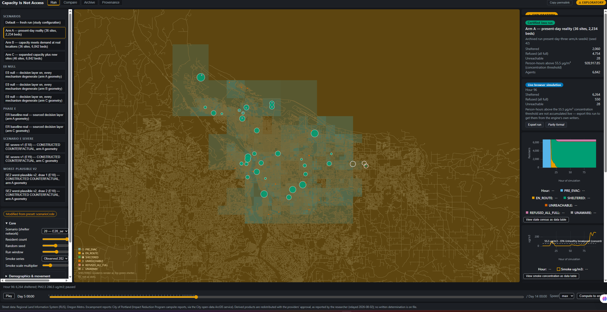
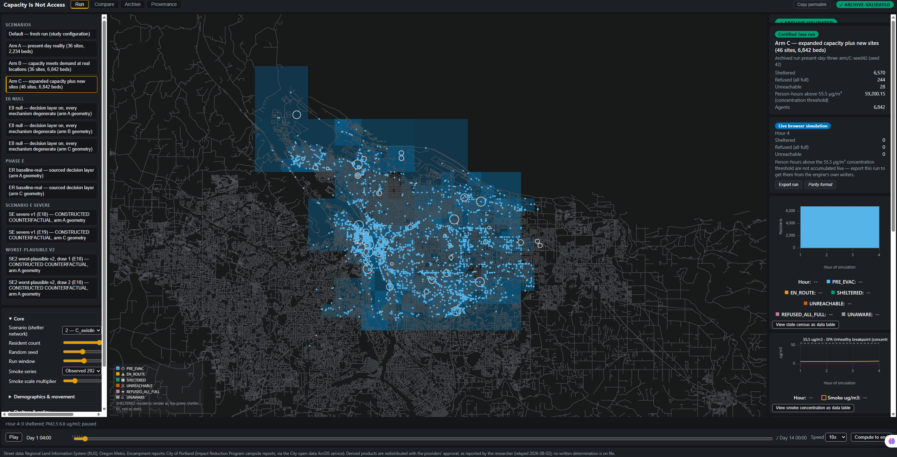
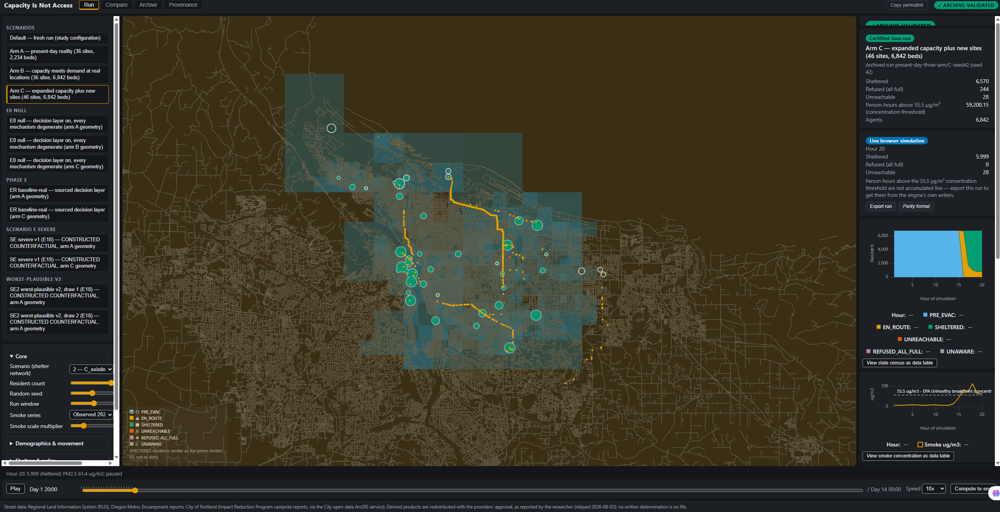
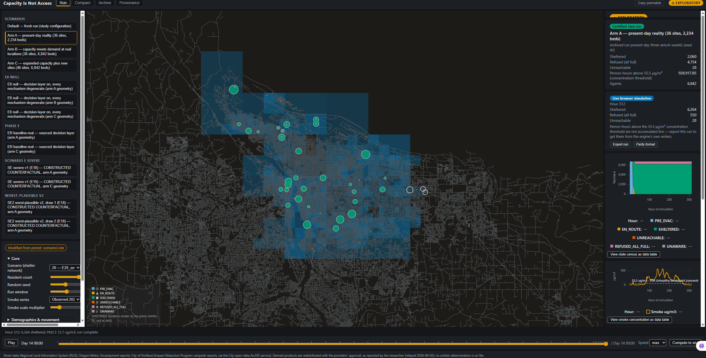

More beds, or better beds? A 93-run agent-based experiment on clean-air shelter access during the September 2020 Portland smoke event.
Fatima Asghar · Harrisburg University of Science and Technology
NSF REU hosted by Portland State University · mentor Prof. Christof Teuscher
scripts/build_deck.py.How to read it. Horizontal axis: clock time across the 312-hour study window (7–19 September 2020), one point per hour. Vertical axis: PM2.5 concentration in micrograms per cubic metre — the mass of fine soot suspended in each cubic metre of air. The dashed line is 55.5 µg/m³, the EPA's published "Unhealthy" breakpoint. Shaded bands mark the two spells above that line.
Geography/data/airnow/aqs_hourly_pm25_portland_2020-09.csv (4,795 rows,
SHA-256 recorded in every run manifest). Threshold 55.5 µg/m³ = EPA AQI "Unhealthy" lower
bound. Measured, not modelled — this chart is the only input the model does not compute.| Attribute | Coded | Drawn | Source (with identifier) |
|---|---|---|---|
| Population size | 6,842 | 6,842 | 2025 Tri-County Point-in-Time Count (PSU HRAC, pub. 2025-11-04): 10,526 homeless, >65% unsheltered |
| Age bands 18–44 / 45–64 / 65+ | 52.7 / 42.3 / 5.0% | — | Pathways Study 2026, PSU HRAC / OHSU, N = 541, Multnomah County |
| Mobility limitation | 19.2% | 19.9% | 2019 Multnomah PIT, 391/2,037 — a lower bound: asked only of survey completers |
| Asthma | 15.0% | 14.8% | Zellmer et al. 2025, J Gen Intern Med, DOI 10.1007/s11606-025-09814-x, n = 20,139 records |
| COPD | 10.5% | 10.8% | Same source (3.0% in housed adults) |
| Start locations | 3,317 | — | City of Portland IRP campsite reports, 3,400 reports → 3,317 distinct coordinates |
Geography/data/registry/variables.csv (the parameter registry),
docs/science/DATA_SOURCES.md (provenance D1–D14).The decision. Simulate one person for every real person — each with their own location, health and walking speed — rather than write a population-level equation.
The reason. The outcome of interest is a collision with a hard limit: a shelter that is full turns away the next person to arrive. Who arrives first depends on where they started and how fast they walk. An average cannot represent a full doorway.
The evidence behind it. Agent-based modelling on the Repast Simphony platform (North et al. 2013, Complex Adaptive Systems Modeling 1(1):3, DOI 10.1186/2194-3206-1-3); routing by Dijkstra's algorithm (Dijkstra 1959, Numerische Mathematik 1:269–271, DOI 10.1007/BF01386390); distances on the WGS-84 ellipsoid by Karney's method (Karney 2013, J Geodesy 87:43–55, DOI 10.1007/s00190-012-0578-z).
What would change if this were wrong. If arrival order did not matter — if beds were allocated centrally by need — the fairness result on slide 13 would disappear, because it is produced entirely by first-come-first-served admission. Scenario D tests exactly that counterfactual.
Geography/src/geography/agents/ContextCreator.java
(model assembly), GisAgent.java (per-person behaviour, one decision per simulated
minute), routing/StreetNetwork.java (graph + shortest paths).
Second implementation: the same three files now also exist as a TypeScript port that
runs the model in a browser with no server, gated against these archived runs (slide 21).25 intersection IDs appeared at physical locations 1.65 to 18.5 km apart, welding distant places into one node and creating 50 impossible edges. Found because one person walked a reported 68.3 km; proved by an independent Python re-implementation of the routing.
Fix: cluster claims by geometry, reattach within 10 m (3 cases) or split to a new synthetic node (22 cases). Nothing deleted; every correction written into the run manifest. Impossible edges after: 0; largest endpoint gap after: 11.9 m.
The centreline file includes limited-access highways. 2,636 freeway-class features, 614.1 km — including the Marquam and Fremont bridge decks, which carry no pedestrian access — were routable.
Fix: exclude RLIS TYPE 1110 and 1120–1123 before graph build, count the removal into every manifest, and regenerate all 93 runs. Resulting graph: 59,725 intersections in the main component, 171 components total.
The result that matters: after removing 614 km of illegal routes and re-running everything, every headline admission count was unchanged to the digit. About twelve people per run moved from "turned away" to "could not reach", because their only link to the network had been a freeway.
StreetNetwork.java (node-site validation),
ContextCreator.java (TYPE filter). Registry row V26 records the filter with
its justification. Independent check: scripts/test_routing.py rebuilds the
graph and re-runs Dijkstra in Python — five tests, exact agreement on distance.
Read the two defects in order. The census above is the post-freeway-filter one,
25 / 3 / 22, because two of the corrupt identifiers sat on features Defect 2 removes. Earlier
drafts quote the pre-filter 27 / 4 / 23; those figures are superseded. The census on this
slide is read out of the run manifest at build time (street_network_validation:
node-site tolerance 100 m, reattach tolerance 10 m,
25 corrections listed individually, displacements
1,654.7 m to 18,562.3 m), which is the same block the live
model's Provenance screen renders, so the slide and the screen cannot disagree.A person leaves when the measured concentration crosses 55.5 µg/m³ and at least one shelter is open. Reason: an earlier version evacuated everyone at hour zero, which put people indoors before the smoke arrived and understated exposure roughly thirteenfold. Source of the number: EPA's published AQI "Unhealthy" breakpoint — a public standard rather than a value I chose. Stated assumption: it is a reporting boundary used as a behavioural trigger; real residents do not carry monitors.
On arrival the person requests admission. If the shelter filled while they walked, they remain at that shelter's street node and re-plan from there, excluding shelters known to be full. Reason: the original code re-planned from the person's campsite, teleporting them home and inflating distance and dose by up to ten kilometres each. That branch never executed at the 50-person test scale, so it passed every comparison test — it was caught by an arithmetic invariant instead (walked ≤ planned + snap gap + 200 m).
if (targetShelter.isOpenAt(tick) && targetShelter.admit()) {
state = State.SHELTERED;
} else {
currentNodeId = targetShelter.getGraphNodeId(); // stay at the door
retargetCount++;
if (retargetCount > MAX_RETARGETS) state = State.REFUSED_ALL_FULL;
}
GisAgent.java (admission + re-route).
Measured consequence: in scenario A the 2,060 admissions come with
17,167 door refusals — one person can be refused many times. The retry
cap is 9; the most any individual actually used is
8, so the cap never bound.| Who | Speed rule | Source |
|---|---|---|
| Everyone | age × sex mean, individual spread CV = 0.13 | Bohannon & Williams Andrews 2011, Physiotherapy 97(3):182–189, DOI 10.1016/j.physio.2010.12.004 (41 studies, n = 23,111); spread from Bohannon 1997, Age & Ageing 26(1):15–19, DOI 10.1093/ageing/26.1.15 |
| Mobility-limited | replaces the above: mean 0.95 m/s | Boyce, Shields & Silcock 1999, Fire Technology 35(1):51–67, DOI 10.1023/A:1015339216366 |
| COPD | −0.19 m/s, added to the age × sex mean, never stacked on the impaired distribution | Buekers et al. 2024, Eur Respir Rev 33(172):230253, DOI 10.1183/16000617.0253-2023 (25 studies; 1,015 COPD vs 2,229 controls) |
| Asthma | no effect | No gait-speed measurement exists for asthma. Borrowing the COPD value would fabricate a finding, so asthma is left at the population speed — and that becomes the model's negative control (slide 15). |
Two deliberate conservatisms, stated. First, spread is taken from within-population variation, not from the meta-analysis confidence intervals — those describe uncertainty about a mean and would understate person-to-person spread by three to five times. Second, someone with both a mobility limitation and COPD receives only the mobility speed, because no study measures the combination; that understates their disadvantage.
PopulationSampler.java. Registry rows:
V10 (base speed), V24 (COPD decrement, with the paper's own low-quality rating recorded),
V27 (truncation bounds 0.40–2.20 m/s). Every row carries its DOI; the model refuses to start
if a literature-class row lacks one.| Quantity | Definition | Status |
|---|---|---|
| Exposure | Σ C(t)·dt — concentration × time in the air around a person (µg/m³·h) | Physics of the air. Verified against raw EPA data, ratio 1.0000 |
| Inhaled dose | Σ C(t)·IR(activity)·dt — mass entering the airway (µg); IR = 1.62 m³/h walking, 0.61 m³/h at rest | Physics of the person. Varies with activity, never with diagnosis. EPA Exposure Factors Handbook 2011, Ch. 6 |
| Health risk | a susceptibility weight multiplying dose | = 1.0 for everyone, on purpose — see below |
The original project brief specified four risk multipliers. I checked each against the paper it was credited to: the 1.45 age multiplier was credited to Di et al. 2017 (NEJM), whose cohort is entirely aged 65+ and therefore cannot yield an age contrast; "Anderson et al. 2013" for COPD 1.80 does not exist; the asthma 1.40 citation resolves to a mortality time series that reports no asthma modifier; the 1.22 child multiplier cites a report series, not a paper. Kondo et al. 2019 pooled eight studies on the age question and report 1.008 (95% CI 0.996–1.020) — a null result.
There is also a units argument that survives even if perfect citations appeared tomorrow: a relative risk is a ratio of outcome rates. Multiplying micrograms by it does not produce micrograms. And no weight could be validated here, because this model simulates no health outcome.
GisAgent.java keeps the three accumulators separate and
exports all three; getHealthRiskMultiplier() returns 1.0 and is printed into every
row of every output file, so a reader sees the switch position rather than taking my word for it.
Consequence for this talk: no result depends on a number I could not trace.| Scenario | What it is | What it isolates |
|---|---|---|
| A · today | the county's real 36 facilities at their real geocoded addresses, 2,234 spaces | a measurement, not a treatment: which constraint binds |
| B · one space per person | same coordinates, every facility scaled ×3.0627, total exactly 6,842 | capacity, and nothing else |
| C · same total, more doors | real sites grow 1.5× only; the remainder opens as ten new ~349-space sites | where the same capacity sits |
| D · B + a triage rule | B's buildings and B's spaces; 10% of each facility (667 spaces) reserved for mobility-limited arrivals | the admission rule, at zero capital cost |
Controls that make "one thing at a time" true, not asserted. The 6,842 residents are byte-identical across scenarios at each random starting point — SHA-256 over the joined attribute vector — so no population difference can explain any result. Scenario B's total is forced to exactly 6,842 by largest-remainder apportionment with an assertion, because a three-bed shortfall would reintroduce the scarcity B exists to remove.
build_scenario_bc_2026.py,
build_scenario_c_2026.py. Verification:
scripts/verify_2026_runs.py — cross-run invariants incl. population identity,
bed-sum, and scenario codes; exits 0 over all archived runs.How to read it. Horizontal axis: scenario. Vertical axis: percentage of the 6,842 residents who reached a shelter and were admitted. Random starting point 42; the nine-seed range is printed in the table below.
| Outcome (seed 42) | A | B | C |
|---|---|---|---|
| Admitted | 2,060 (30.1%) | 6,264 (91.6%) | 6,570 (96.0%) |
| range over 9 starting points | 2,053–2,064 | 6,257–6,268 | 6,563–6,574 |
| Turned away (every reachable shelter full) | 4,754 | 550 | 244 |
| Could not reach any shelter | 28 | 28 | 28 |
| Spaces left empty | 174 | 578 | 272 |
| Mean distance walked (m) | 18,244 | 7,896 | 5,904 |
| Mean inhaled dose over 312 h (µg) | 23,373 | 3,056 | 1,536 |
docs/final/results-2026/6_SEED_ROBUSTNESS.csv.Scenario C admits 306 more people than B. My hypothesis was that the placement algorithm earned that. So I ran the control: ten sites drawn uniformly at random from the same 498-node candidate pool the optimiser searched, three independent draws.
| Site selection | Admitted (starting points 42 / 43 / 44) | Mean walk |
|---|---|---|
| p-median optimiser (scenario C) | 6,570 / 6,565 / 6,566 | 5,537 m |
| random from the same pool, draw 1–3 | 6,565 / 6,566 / 6,570 — identical | 15,011 m |
Reading. The optimiser contributes zero to headcount and 63.1% shorter walks. So the honest attribution is: splitting the same capacity across more doors is what admits more people; choosing the doors well is what shortens the journey — and that walking benefit assumes everyone knows where every shelter is.
docs/runs/scenario-crandom-2026/CP2026r4/r5/r6-*
manifests (9 runs) vs present-day-three-arm/C-seed42/43/44.
This control refuted my own headline. It is reported because a result that survives its
own control is worth more than a larger result that was never tested.How to read it. Horizontal axis: total spaces provided at the existing 36 sites, expressed as a multiple of demand (6,842 people). Vertical axis: percentage of residents admitted, averaged over three random starting points. The dashed horizontal line is scenario C's admission rate. Each point is a full three-run family; the two vertical guides mark the crossings.
| × demand | spaces | admitted % | mobility gap (pp) | reading |
|---|---|---|---|---|
| 0.8 | 5,474 | 73.27 | 28.3 | severe scarcity |
| 1.0 | 6,842 | 91.51 | 23.5 | = scenario B |
| 1.05 | 7,184 | 96.07 | 15.0 | matches C's headcount; gap still open |
| 1.10 | 7,526 | 99.51 | -0.0 | every reachable person admitted; gap gone |
| 1.2–1.6 | 8,210–10,947 | 99.51 | -0.0 | plateau — nothing left to buy |
docs/runs/phaseD-bed-sweep/ (21 runs, seven capacity levels).
I registered the opposite prediction — 1.4–1.6× — before running this. It is reported on
slide 16.How to read it. Horizontal axis: percentage of a group admitted. Each row is one scenario. Open circle = residents with no mobility limitation; filled circle = residents with a mobility limitation. The number at the right is the gap between them in percentage points.
How to read it. Horizontal axis: minutes since departure (first four hours). Vertical axis: cumulative percentage of that group already inside a shelter. The dashed vertical line marks 60 minutes.
Nobody is denied a bed for being disabled. Beds go to whoever arrives first — and when beds are scarce, "first" is decided by walking speed. The gap is not assumed; it falls out of the admission rule. 80% of scenario B's final gap already exists one hour after departure.
docs/final/results-2026/2_BY_GROUP.csv,
per-person arrival times from the archived agents.csv files.Hold 10% of each facility's spaces — 667 spaces across the system — for mobility-limited arrivals. No new building, no new bed, no relocation.
Why it works, and where it matters. The gap is produced by a race, so a rule that removes some spaces from the race closes it. And the sweep on slide 12 shows the gap only exists while capacity ≈ demand — which is precisely the margin a county operates on. Where surplus can be bought, buy surplus; where it cannot, the rule costs nothing.
triageReserveFraction; at 0.0 it reproduces scenario B bit-for-bit, which is the
regression test that the rule is the only difference. Source:
docs/runs/scenario-d-2026/ (8 runs across reserve fractions 0, 10, 15, 25%).| Check | What it proves | Result |
|---|---|---|
| Parameter registry gate | a literature or measured value cannot enter the model without a DOI or dataset ID, and a swept range | model refuses to start otherwise; it caught my own mislabelled row on the first run |
| Input fingerprints | a reader has the same data I did | 13 files hashed into every run manifest |
| Exposure re-computation | the physics is not asserted | independent Python integration of the raw EPA file matches the model to a ratio of 1.0000 |
| Hand-checkable invariant | anyone can verify without code | 194 of 312 hours were unhealthy, so anyone never admitted must show exactly 194.0 h — all 5,632 such rows do, zero exceptions |
| Negative control | the model does not invent effects | asthma has no movement mechanism, so it must show no access effect — and does not, in every scenario |
| Cross-run invariants | the scenarios differ only as designed | population identity, bed sums, unreachable-set identity; suite exits 0 |
| Provenance flag | a run cannot silently come from uncommitted code | an audit found nine such runs; all were re-run from committed code and the detector is now permanent |
| Independent second implementation | the result is a property of the model, not of one runtime | the whole model re-implemented in TypeScript (slide 21): every shelter's final occupancy matches the archive at 36 of 36 sites, and 2,060 sheltered / 28 unreachable came back in 200 of 200 permutation streams |
verify_2026_runs.py, test_routing.py,
analyze_run.py, lint_claims.py (a registry of every corrected claim;
the build fails if a retired sentence returns). The strongest evidence is slide 5: a real
defect was found, fixed, and everything re-run — and the headline numbers did not move.Thirteen predictions were written down with a timestamp before the capacity sweep and the corrected-graph re-runs. Eleven held. Two did not, and both made the answer simpler:
| Prediction | Outcome |
|---|---|
| Surplus at the existing sites would not match C's admissions until 1.4–1.6× demand | Wrong. It matched at 1.05× — so C's headcount advantage is worth ~342 spaces, not thousands |
| The mobility gap would persist under capacity surplus | Wrong. It vanishes at 1.10× — the gap is a property of the scarcity margin, not a general law |
| Removing 614 km of freeway would leave admissions within 1 percentage point | Held, and then some — unchanged to the digit |
| Travel medians would move by ≤2% | Partially wrong — 8 of 54 runs moved up to 3.2%, concentrated in scenario C |
A registered prediction is only worth something if the misses are published beside the hits. These two changed the policy conclusion in the direction of "cheaper than I thought".
docs/critique-response/12-PHASE-D-PREDICTIONS.md
(registered 2026-07-28, before the runs) and the outcome table in
11-ROUND5-REPORT.md.Every run writes each resident's inputs joined to their outcomes on one line: age, sex, mobility, asthma, COPD, chronic condition, walking speed and start coordinates → admitted or not, which shelter, minutes to reach it, how many full doors turned them away, metres walked, hours in unhealthy air, micrograms inhaled.
The model fitted to that output: logistic regression for the binary outcome (admitted or not) — the standard family for evacuation outcomes, and its coefficients read as odds ratios; ordinary least squares for minutes-to-shelter among those admitted. Fitted by iteratively reweighted least squares with information-matrix standard errors.
What it is for: not discovery — verification. It should re-find the mechanisms I built and nothing else. It does: distance to the nearest site and walking speed dominate; COPD appears through its speed effect; asthma is statistically null in every scenario. In scenario D, conditional on speed, it re-finds the reserve rule I wrote — a pipeline sanity check, and its magnitude is not quotable because whole speed bands sit at 100% admission.
A behavioural trend it makes visible: residents refused at least once average about 3.1–3.4 door attempts. Under scarcity only 6.6% of them eventually get in; once capacity or doors are added, 79–91% do.
docs/final/results-2026/1_EVERY_PERSON.csv
(plain-English, opens in Excel), ML_TRAINING_DATA.csv (27,368 model-ready rows),
ML_MODEL_SUMMARY.md (full model card incl. the separation diagnostic),
scripts/fit_outcome_models.py (the method, and why it was chosen, in the header).| Domain | Source |
|---|---|
| Smoke | U.S. EPA Air Quality System, hourly PM2.5, parameter 88502, Sept 2020 (4,795 rows). Parameter 88101 was checked first and contains no Multnomah monitors. |
| Population | 2025 Tri-County Point-in-Time Count, PSU HRAC, published 2025-11-04 |
| Age, chronic condition | Pathways Study 2026, PSU HRAC / OHSU, N = 541 |
| Sex, mobility | 2019 Multnomah PIT (no newer local source — stated vintage) |
| Asthma, COPD | Zellmer et al. 2025, DOI 10.1007/s11606-025-09814-x, n = 20,139 |
| Walking speed | Bohannon & Williams Andrews 2011 (10.1016/j.physio.2010.12.004); Bohannon 1997 (10.1093/ageing/26.1.15); Boyce et al. 1999 (10.1023/A:1015339216366); Buekers et al. 2024 (10.1183/16000617.0253-2023) |
| Breathing rates | U.S. EPA Exposure Factors Handbook 2011, Ch. 6, EPA/600/R-09/052F |
| Methods | Karney 2013 (10.1007/s00190-012-0578-z); Dijkstra 1959 (10.1007/BF01386390); North et al. 2013 (10.1186/2194-3206-1-3) |
| Shelters | Multnomah County HSD inventory + City of Portland Safe Rest Village addresses; 36 facilities geocoded, 2,234 spaces |
| Start locations | City of Portland IRP campsite reports, ArcGIS open data (3,400 reports → 3,317 distinct coordinates) |
| Streets | Portland Metro RLIS centrelines; freeway classes excluded (slide 5) |
| Calibration record | Street Roots, published 2020-09-16 (occupancy observed the night of 15 Sept): ≈90 at the Convention Center, ≈40 at Charles Jordan, of 99 + 99 spaces |
It predicts no health outcome. It measures particulate entering an airway. Converting that to illness would need a coefficient I could not source, so the study says nothing about mortality.
It assumes full information. Everyone knows every shelter and its live occupancy. That assumption has a measured size: against the one real occupancy record from 2020, the model over-admits by a bracket of 1.5–15.6× (the record is approximate, so a single point value would misrepresent it). A local survey found 65% of unsheltered residents had never heard of the clean-air shelters. That bracket is the measured size of everything human the model omits — awareness, belongings, pets, trust — and closing it is the next phase, already specified with sourced attributes and registered predictions.
It uses one smoke value county-wide. Two regulatory monitors cannot support a spatial surface. The consequence is useful: no scenario can help by moving people into cleaner air, so every effect reported here is a travel-time effect.
Its dose figures depend on the window. Over the full 312 hours the B-to-C mean-dose ratio is 1.98; over the first 24 hours it is 1.29. Both are reported, because a single figure would hide the dependence.
Better-placed beds was the one answer the evidence refused: ten randomly chosen sites admit exactly as many people as ten optimally chosen ones. What choosing well buys is a shorter walk — and only if people know where to walk.
What it is. The certified Java/Repast model has been re-implemented in TypeScript and compiled to a static web page. No server, no account, no upload: the page fetches the street graph, the shelter table and the smoke series, then runs the whole 312-hour simulation for all 6,842 residents on the viewer's own machine.
Why that matters scientifically. Slide 10 asks you to trust a table. This asks you to trust nothing: select arm A, press play, and watch 2,060 arrive. The unit of publication stops being my result and becomes my instrument.
| Plane | What was built | Evidence that it works |
|---|---|---|
| Random numbers | Bit-exact reimplementations of java.util.Random and colt's
MersenneTwister, the two generators Repast draws from |
100,000,000 draws dumped from real Java (107 × 5 seeds × 2 generators). All ten sequences matched on the first attempt; no fixture was regenerated to fit the port |
| Transcendental maths | One shared fdlibm module for log, exp, pow,
sin, cos, atan2, plus an allow-list lint that fails the
build if engine source touches any host Math routine the language does not
exactly specify, and bans Math.random outright |
Byte-identical on Chromium 141 (V8), Firefox 142 (SpiderMonkey), WebKit 26
(JavaScriptCore) and Node 24. The host-Math control in the same corpus returns
four different digests on four engines |
| Geodesic distance | The geodesic solver vendored onto that same module, because it called host
Math at fifty sites and runs once per agent per tick |
Before: 142 / 126 / 249 of 1,200 doubles differing across the three browsers, agreement bounded at 3.2 nm. After: 0 of 3,600 doubles differ, and the gate changed from a tolerance into an equality |
The measurement that settled it. Node 24 and Chromium 141 ship the same
JavaScript engine, V8, and still disagree on Math.log. Shipping the host
routines would not merely have differed across vendors; it would have broken silently on a
Chrome update, in a way no output diff would ever have attributed to arithmetic.
websim/docs/DR-WP3-cross-engine.md,
DR-C1-geodesic-fdlibm.md, DR-WP7-order-attribution.md;
websim/engine/src/rng/, websim/engine/src/mathx/.Selecting a preset renders the certified Java figures instantly, at zero compute, under a green "Certified Java run" label, before any simulation starts. The live browser run then appears beside them under a blue "Live browser simulation" label. It never replaces them, and no figure is ever shown wearing the other class's chip.

How to read it. Top bar: the four screens (Run, Compare, Archive, Provenance), a "Copy permalink" button that encodes the entire configuration into the URL, and the badge chip at the far right, here amber. Left rail: the preset list, grouped SCENARIOS / E0 NULL / PHASE E / SCENARIO E SEVERE / WORST-PLAUSIBLE V2, with arm A selected; beneath it the parameter drawer, open at Core (scenario, resident count, random seed, run window, smoke series, smoke scale multiplier), with Demographics and movement, and Shelters and policy, collapsed below. Centre: the RLIS street network in outline; the teal semi-transparent squares are the k-anonymised encampment density grid (slide 25) and are deliberately never individual campsites; the green circles are the 36 shelters, sized by capacity. The legend lists all six resident states (PRE_EVAC, EN_ROUTE, SHELTERED, UNREACHABLE, REFUSED_ALL_FULL, UNAWARE) and notes that sheltered residents render as the green shelter fill rather than as dots, which is why an emptying map means a filling shelter. The whole view is washed olive: that is the smoke scrim, drawn at the hour's measured 286.5 µg/m³. Right rail, green block: arm A as certified, 2,060 sheltered, 4,754 turned away, 28 unreachable, 928,917.85 person-hours above 55.5 µg/m³, 6,842 agents, named as archived run present-day-three-arm/A-seed42. Blue block: the live run at hour 96, 6,264 sheltered, 550 turned away, 28 unreachable, with a note that person-hours are not accumulated live and must be exported from the engine's own writers. Below those: the stacked-area state census (horizontal axis hour of simulation, vertical axis residents) and the smoke chart with its dashed line at 55.5, labelled "EPA Unhealthy breakpoint (concentration threshold)". Bottom: the live ticker reading "Hour 96: 6,264 sheltered; PM2.5 286.5 ug/m3; paused", the Play button, the clock at Day 5 00:00 of Day 14 00:00, the tick scrubber, the speed selector at max, and "Compute to end".
docs/runs/present-day-three-arm/A-seed42/simulation.json, the same file slide 10
reads. The two label strings are pinned as constants in websim/app/src/index.ts
and asserted by test, so UI copy cannot drift off them.| Badge | What it claims | How it is earned, and how it is lost |
|---|---|---|
| ARCHIVE-VALIDATED (green) | this configuration is byte-identical to the configuration of a certified archived run | all 41 parameters diff clean against that run's executed manifest, not against what its batch file asked for |
| ENGINE-CERTIFIED | the in-browser gate subset ran green, but no archived run corresponds to this configuration | carried by the default fresh-run configuration, whose own notes record that it is never ARCHIVE-VALIDATED |
| EXPLORATORY (amber) | these numbers are the browser's own and nothing certifies them | touch any slider and it drops here immediately; set the value back by hand and the badge returns, because a badge belongs to the configuration and not to the gesture |
| INVALID (red) | these results cannot support any claim about this configuration | a hard veto that beats every other signal, including a green archive match: the run window ran past the end of the smoke data, or the values the engine executed differ from the values that were configured |
The two rules that make this a machine rather than a decoration. Unknown evidence never upgrades a badge, because a check that has not run is not a check that passed. And a badge is never inherited across an edit: run evidence can only veto, so nothing a simulation produces can promote a badge upward.

How to read it. Arm C is selected and nothing has been touched, so the chip top right is green and reads ARCHIVE-VALIDATED, and there is no "Modified from preset" chip above the drawer. The scenario selector reads 2, arm C's own code. Green block: arm C as certified, 6,570 sheltered, 244 turned away, 28 unreachable, 59,200.15 person-hours above 55.5 µg/m³, from archived run present-day-three-arm/C-seed42. Blue block: the live run at hour 4, every figure still zero. The map explains why: those thousands of small blue dots spread across the density cells are PRE_EVAC residents, still at their start locations, because the concentration is 6.8 µg/m³ and the 55.5 departure trigger has not fired. The census chart is one flat blue band; the smoke chart's dashed 55.5 line sits above the curve rather than below it. The clock reads Day 1 04:00 of Day 14 00:00 and the ticker reads "Hour 4: 0 sheltered; PM2.5 6.8 ug/m3; paused". Arm C's 46 sites are the green circles here, against arm A's 36 on the previous slide: that difference is the ten extra doors, on the map.
websim/app/src/badge/machine.ts (the derivation and its authority
order), websim/app/src/state/store.ts (badges are config-derived; any parameter
difference drops them), websim/shared/test/preset-archive-parity.test.ts (each
preset's parameter block diffed against the archived simulation.json).
How to read it. Arm C, hour 20, badge still green. The concentration has just crossed the trigger (61.4 µg/m³ against 55.5), so departure has fired and the map has changed character completely. The orange dots are EN_ROUTE residents, and they are strung out in visible lines, because each one is walking the street network rather than flying across it: every line is a shortest path being consumed at that person's own walking speed. The green circles brighten as they fill, because sheltered residents render as shelter fill rather than as dots. In the right rail the live block reads 5,999 sheltered and 0 turned away. The stacked-area census below shows the blue PRE_EVAC band collapsing into the green SHELTERED band with a thin orange EN_ROUTE band between them: that band is the journey, and its width is the exposure. The map is washed a light olive by the smoke scrim at 61.4. The clock reads Day 1 20:00 of Day 14 00:00, at speed 10x.
The population this model is about is unsheltered. Publishing a zoomable map of where they sleep would be a harm this study has no right to cause, so the teal layer on every previous slide is not a map of campsites, and it was never built from one.
| Control | What it does | Measured effect |
|---|---|---|
| k-anonymity floor on every published cell | no density cell is published holding fewer than 5 reports; a cell that misses the floor is merged into its parent, doubling the cell in each direction, and re-tested, up to 4.8 km, before anything is dropped | the first build shipped 1,863 cells, 1,773 of them below 5, and 1,100 holding exactly one report, which is a campsite located to within a city block. After the floor: 506 cells, smallest count 5, none below the floor. 3,371 of 3,400 reports still reach the map, and the 29 that do not are published as a suppression count rather than silently dropped |
| The raw CSV is not an asset at all | the raw campsite file is never shipped. The worker's encampment input is synthesised at runtime from a public asset carrying street-node-snapped coordinates and salted row hashes | a publication gate greps every built asset for raw coordinate bit patterns, raw coordinate text pairs, report ids and salt material, and refuses to pass rather than pass quietly when it cannot prove absence |
| SHA-256 on every asset | the manifest is fetched first, and every manifest-listed asset is hash-verified before a single byte reaches a caller; a mismatch throws, naming the asset and both digests | a reader gets the same graph, shelters and smoke series I used, or an error. Never a quiet substitution |

How to read it. The same run as slide 22, finished. Hour 312; the ticker reads "Hour 312: 6,264 sheltered; PM2.5 12.7 ug/m3; run complete"; the clock reads Day 14 00:00; and the smoke chart has filled in the whole 312-hour curve, with its early spike, its clean gap and its multi-peaked main episode, all against the dashed 55.5 line. Concentration is back down to 12.7, so the smoke scrim has lifted and the density grid reads in its own blue for the first time. That grid is the point of this slide: aggregated cells of varying size, not campsite points, and the varying sizes are the merge levels, cells that had to be widened until at least five reports sat inside. The certified arm A block in the right rail has not moved, because archived numbers do not change when a live run finishes.
websim/docs/DR-Q4-encampment-disclosure.md (the census before and
after, the merge rule, the salt custody decision), pipeline/scripts/deploy-check.ts
(the publication gate), websim/app/src/assets/loader.ts (manifest verification),
websim/app/src/sim/useSimRun.ts (the synthesis).